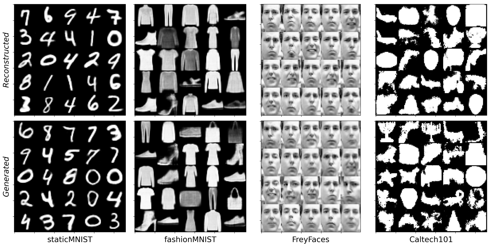
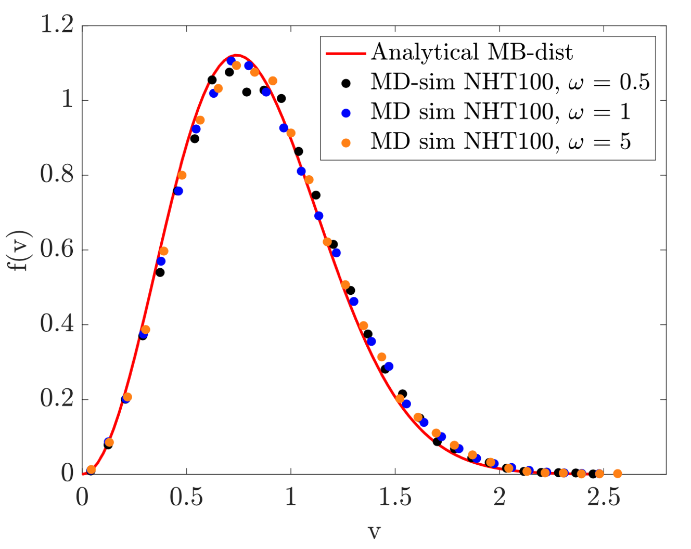
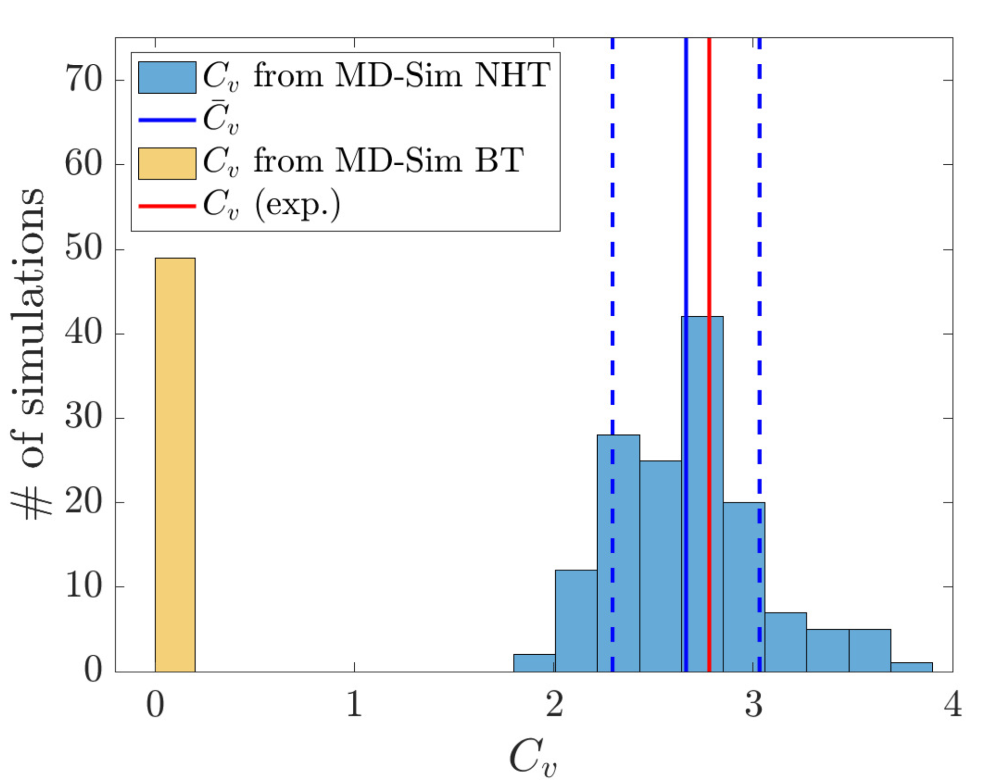
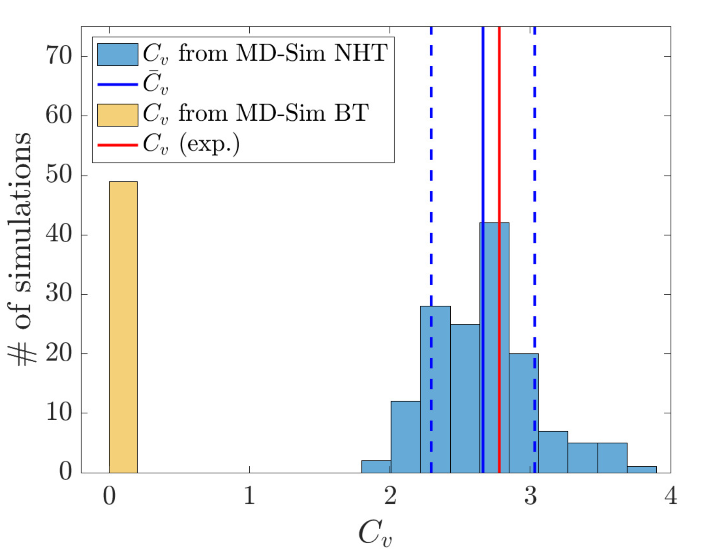
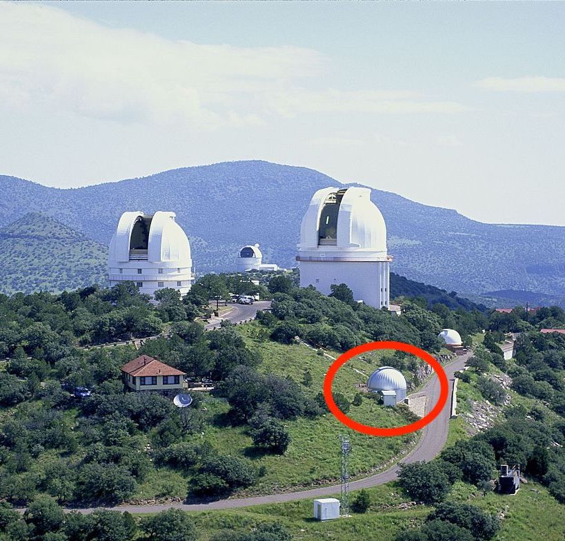
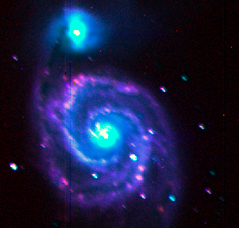
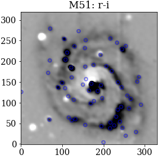
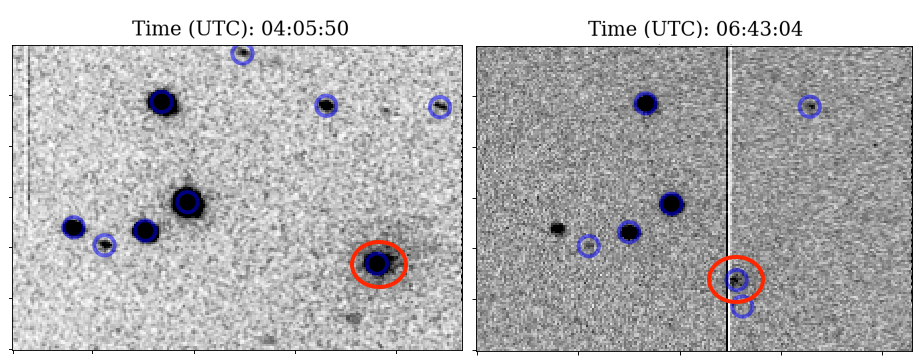
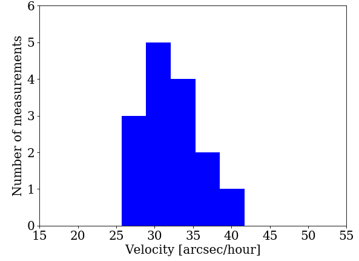

Course Projects
Done during my civil engineer program in Engineering Physics (2016-2021)
I here briefly present some of the major projects I have done during courses at KTH Royal Institute of Technology (KTH) and at the University of Texas at Austin (UTA) during my exchange semester:
- VAE with VampPrior (DD2434 – Machine Learning, Advanced Course; KTH, year 5)
- Temperature Control in Molecular Dynamics (SI2530 – Computational Physics; KTH, year 5)
- Narrow-band Imaging of Nearby Galaxies (AST376 – Observational Methods in Astronomy; UTA, year 4)
- Tracking a Comet (AST376 – Observational Methods in Astronomy; UTA, year 4)
- To be inserted: Levitating Superconductor (Applied Modern Physics; KTH, year 3).
- To be inserted: Multi-lane Highway Simulation (Simulation and Modelling; KTH, year 3).
VAE with VampPrior
Course: DD2434 – Machine Learning, Advanced Course (KTH)
Tools: TensorFlow (Python)Deep generative models have recently been very popular for reconstructing and generating data, such as images. One of the most successful models is the Variational Auto-Encoder (VAE). In Tomczak and Welling (2017), a new Variational Mixture of Posteriors Prior (VampPrior) was introduced. It was shown to make the prior (usually chosen as a standard Gaussian) more flexible, allowing it to capture the latent representation to a greater extent. The statistical foundation lies in estimating the prior from the data instead of fixing it before the data acquisition.
In this project, we have implemented the VAE with three different priors – standard Gaussian, VampPrior and VampPriordata – on the following datasets: staticMNIST, Caltech 101 Silhouette, and FreyFaces from the original paper, and FashionMNIST dataset, to extend the investigation. In all cases, we reproduce one of the most striking effects of using VampPrior; it always outperforms the standard Gaussian prior. The image above shows a comparison between reconstructed and artificially generated data for all datasets. Parameters used: epochs = 1000, dimension of latent space = 40, batch size = 100, number of pseudo inputs = 500.
Temperature Control in Molecular Dynamics
Course: SI2530 – Computational Physics (KTH)
Tools: MATLAB and Fortran 
In molecular dynamics simulations one has to choose between different thermostats to achieve a fluctuating instantaneous temperature around a constant reference temperature. Two such are the Berendsen thermostat (BT) and the Nosé-Hoover thermostat (NHT), which both preserve the expected Maxwell-Boltzmann Distribution for the speed of the particles (left image shows the NHT-case). In this project, I show that a low $\tau$-value in BT and a high $\omega$-value in NHT (middle image) increase the thermostats' performance in terms of faster responses and lower fluctuations. During changes in reference temperature, however, a too high $\omega$ leads to oscillations, so in this respect, the BT is more successful. On the contrary, the BT fails to accurately generate energy fluctuations corresponding to the thermodynamics of a canonical ensemble while the NHT succeeds; it is shown that NHT generates a heat capacity per particle of $C_V = 2.67k_B$ at $T=85$K, which compares very well (right image) to the experimental value of $C_{V,\text{exp}} = 2.78k_B$. To switch between the thermostats, using mainly NHT but BT during changes in $T_{\text{ref}}$, would therefore enhance the overall performance.
Narrow-band Imaging of Nearby Galaxies
Course: AST376 – Observational Methods in Astronomy (UTA, year 4)
Tools: Python and Remote Operation of Telescope using IRAFIn this project, I remotely operated the 30 inch telescope (left) at McDonald’s Observatory in Fort Davis, Texas, equipped with the SDSS (Sloan Digital Sky Survey) filters ugri, plus a narrow-band filter centered on the H-alpha spectral line (Balmer series, $n=3\mapsto2$ transition). One galaxy studied was M51, of which I present my own RGB-image of it above (middle). The goal of the project was to identify star-forming regions (the blue circles in the right image) as those which have knots of excess H-alpha emission, since this is radiation coming from the re-combination of hydrogen, a process which is especially evident when stars are forming. After flux-calibrating the galaxy image using field stars, I used aperture photometry to measure the fluxes of these H-alpha knots, converting to the H-alpha luminosity using the known distances to these well studied galaxies. For M51, I found a luminosity around $10^{39}$ erg/s in the HII-regions, which is sufficiently high to indicate star formation.
Tracking a Comet
Course: AST376 – Observational Methods in Astronomy (UTA, year 4)
Tools: Python and Remote Operation of Telescope using IRAFEvery once in a while, one of the 3620 known comets passes closely by our planet. Most of their orbits are known, but unpredictable perturbations require us to constantly keep track and update our orbit models. The proper motion of the comet 88P/Howell (encircled in red) was here measured on May 8 2020, using the SDSS g-filter of the $30''$ telescope at McDonald's Observatory, to be $32.41 \pm 5.16$ arcseconds per hour (right), corresponding to $6.53 \pm 1.04$ km/s. This speed is lower than the expected of around $45''$/hr, which could be explained by the comet moving more in the radial direction than predicted and/or by the short observation period, resulting in a higher error. The brightness was measured to a lower value ($16.2$) than presented by the community ($12-15.7$), which most likely is a result of high cloud cover during the observation.